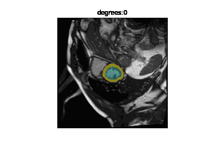
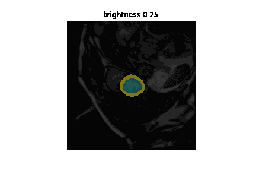
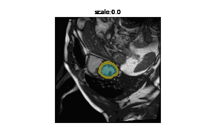
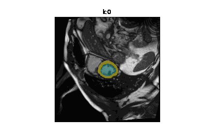

from misas.fastai_model import Fastai2_modelLocal Interpretability
Evaluation functions
Sensitivity Analysis
Example data (kaggle)
def label_func(x):
pass
def acc_seg(input, target):
pass
def diceComb(input, targs):
pass
def diceLV(input, targs):
pass
def diceMY(input, targs):
passdef img():
"""
Opens the sample image as a PIL image
"""
return Image.open("example/kaggle/images/1-frame014-slice005.png").convert("RGB")
#img = lambda: Image.open("example/kaggle/images/1-frame014-slice005.png")
def trueMask():
"""
Opens the true mask as a PIL image
"""
return Image.open("example/kaggle/masks/1-frame014-slice005.png").convert("I")
#trueMask = lambda: Image.open("example/kaggle/masks/1-frame014-slice005.png")
trainedModel = Fastai2_model("chfc-cmi/cmr-seg-tl", "cmr_seg_base")Using cache found in /home/csa84mikl/.cache/torch/hub/chfc-cmi_cmr-seg-tl_masterDefault color map
Define a default color map for the sample image derived from viridis and a default color map for the true map derived from plasma but setting the color for class “0” to completely transparent. This makes sense if class “0” is the background.
Generic functions
get_generic_series
get_generic_series (image, model, transform, truth=None, tfm_y=False, start=0, end=180, step=30, log_steps=False)
Generic function for transforming images. Input: image (PIP image, usually your sample image opened by img()), model (the function for your model that manages the prediction for your mask), transform (your specific transformation function), truth = None (replaces with a true mask if available), tfm_y = False (set to True if your true mask has to be transformed as well to fit the transformed sample image e.g in case of a rotation of the sample image), start, end, step as values the transform function, log_steps = False (if enabled logarithmic steps as parameters for the transform function are possible) Output: a list containing lists of [param, img, pred, trueMask] after img and optionally trueMask have been transformed and pred has been determined by using a modell on the transformed img for each different param
plot_series
plot_series (series, nrow=1, figsize=(16, 6), param_name='param', overlay_truth=False, vmax=None, vmin=0, cmap=<matplotlib.colors.ListedColormap object at 0x7f52ec9228e0>, cmap_true_mask=<matplotlib.colors.ListedColormap object at 0x7f520556ddf0>, **kwargs)
plots the transformed images with the prediction and optionally the true mask overlayed intput: series = a list containing lists of [param, img, pred, trueMask] from the function get_generic_series nrow = number of rows drawn with the transformed images figsize = (16,6) param_name=‘param’, overlay_truth = False (if True displays the true mask over the sample along with the prediction) vmax = None (controls how many colors the prediction is going to have, can be set manually by the user, otherwise is deterimed by the max amount of colors in the prediction cmap= default_cmap (sets the default color map) output: a plot generated by mathplotlib
plot_frame
plot_frame (param, img, pred, param_name='param', vmax=None, vmin=0, cmap=<matplotlib.colors.ListedColormap object at 0x7f52ec9228e0>, **kwargs)
plots the transformed images and prediction overlayed for the gif_series function
gif_series
gif_series (series, fname, duration=150, param_name='param', vmax=None, vmin=0, cmap=<matplotlib.colors.ListedColormap object at 0x7f52ec9228e0>)
creates a gif from the output of plot_frame
eval_generic_series
eval_generic_series (image, mask, model, transform_function, start=0, end=360, step=5, param_name='param', mask_transform_function=None, components=['bg', 'c1', 'c2'], eval_function=<function dice_by_component>, mask_prepareSize=True)
Perform the transformation on the sample, creates a prediction and then uses the prediction and true mask to run an evaluation function to measure the overlap between predicted mask and true mask
plot_eval_series
plot_eval_series (results, chart_type='line', value_vars=None, value_name='Dice Score')
Plots the resuls of the eval_generic_function
Rotation
get_rotation_series
get_rotation_series (image, model, start=0, end=361, step=60, **kwargs)
runs the get_generic_series with rotationTransform as transform
rotationTransform
rotationTransform (image, deg)
rotates an image by x degrees (deg)
series = get_rotation_series(img(), trainedModel, truth=trueMask())[W NNPACK.cpp:51] Could not initialize NNPACK! Reason: Unsupported hardware.plot_series(series, overlay_truth = True)eval_rotation_series
eval_rotation_series (image, mask, model, step=5, start=0, end=360, param_name='deg', **kwargs)
results = eval_rotation_series(img(), trueMask(), trainedModel, components=['bg','LV','MY'])
plot_eval_series(results)You can easily generate gifs by plotting multiple frames
gif_series(
get_rotation_series(img(),trainedModel,start=0,end=360,step=5),
"example/kaggle/rotation.gif",
duration=500,
param_name="degrees"
)
Cropping
get_crop_series
get_crop_series (image, model, start=0, end=256, step=10, finalSize=None, **kwargs)
cropTransform
cropTransform (image, pxls, finalSize=None)
series = get_crop_series(img(), trainedModel, truth=trueMask(), step=10)plot_series(series,nrow=3,figsize=(16,15), overlay_truth = True) #,overlay_truth=True)eval_crop_series
eval_crop_series (image, mask, model, step=10, start=0, end=256, finalSize=None, param_name='pixels', **kwargs)
results = eval_crop_series(img(), trueMask(), trainedModel, components=['bg','LV','MY'])
plot_eval_series(results)Cropping and comparing to the full original mask might not be desired. In this case it is possible to crop the mask as well. All pixels in the cropped area are set to 0 (commonly the background class). As soon as a class is completely missing, the dice score might jump to 1 because not predicting the class is correct in that case.
gif_series(
get_crop_series(img(),trainedModel,start=0,end=256,step=5),
"example/kaggle/crop.gif",
duration=500,
param_name="pixels"
)Brightness
get_brightness_series
get_brightness_series (image, model, start=0.25, end=8, step=1.4142135623730951, log_steps=True, **kwargs)
brightnessTransform
brightnessTransform (image, light)
series = get_brightness_series(img(), trainedModel, truth=trueMask(), start=1/8, end=16)plot_series(series, nrow=3, figsize=(12,6), overlay_truth = True)eval_bright_series
eval_bright_series (image, mask, model, start=0.05, end=0.95, step=0.05, param_name='brightness', **kwargs)
results = eval_bright_series(img(), trueMask(), trainedModel, start=0, end=1.05, components=['bg','LV','MY'])
plot_eval_series(results)gif_series(
get_brightness_series(img(), trainedModel, step = np.sqrt(2)),
"example/kaggle/brightness.gif",
duration=500,
param_name="brightness"
)
Contrast
get_contrast_series
get_contrast_series (image, model, start=0.25, end=8, step=1.4142135623730951, log_steps=True, **kwargs)
contrastTransform
contrastTransform (image, scale)
series = get_contrast_series(img(), trainedModel, truth=trueMask(), start=1/8, end=16)plot_series(series, nrow=3, figsize=(12,8), overlay_truth = True)eval_contrast_series
eval_contrast_series (image, mask, model, start=0.25, end=8, step=1.4142135623730951, param_name='contrast', **kwargs)
results = eval_contrast_series(img(), trueMask(), trainedModel, start=0.25, end=8, step=np.sqrt(2), components=['bg','LV','MY'])
plot_eval_series(results)gif_series(
get_contrast_series(img(), trainedModel,step=np.sqrt(2)),
"example/kaggle/contrast.gif",
duration=500,
param_name="contrast"
)
Zoom
get_zoom_series
get_zoom_series (image, model, start=0, end=1, step=0.1, finalSize=None, **kwargs)
zoomTransform
zoomTransform (image, zoom, finalSize=None)
series = get_zoom_series(img(), trainedModel, truth=trueMask())plot_series(series, nrow=2, figsize=(16,8), overlay_truth = True)eval_zoom_series
eval_zoom_series (image, mask, model, step=0.1, start=0, end=1, finalSize=None, param_name='scale', **kwargs)
results = eval_zoom_series(img(), trueMask(), trainedModel, components=['bg','LV','MY'])
plot_eval_series(results)gif_series(
get_zoom_series(img(),trainedModel,start=0,end=1,step=0.1),
"example/kaggle/zoom.gif",
duration=500,
param_name="scale"
)
Dihedral
get_dihedral_series
get_dihedral_series (image, model, start=0, end=8, step=1, **kwargs)
dihedralTransform
dihedralTransform (image, sym_im)
series = get_dihedral_series(img(), trainedModel, truth=trueMask())plot_series(series, overlay_truth = True)eval_dihedral_series
eval_dihedral_series (image, mask, model, start=0, end=8, step=1, param_name='k', **kwargs)
results = eval_dihedral_series(img(), trueMask(), trainedModel, components=['bg','LV','MY'])
plot_eval_series(results, chart_type="point")gif_series(
get_dihedral_series(img(), trainedModel),
"example/kaggle/dihedral.gif",
param_name="k",
duration=1000
)
Resize
resizeTransform
resizeTransform (image, size)
get_resize_series
get_resize_series (image, model, start=10, end=200, step=30, **kwargs)
series = get_resize_series(img(), trainedModel, truth=trueMask())plot_series(series, sharex=True, sharey=True, overlay_truth = True)eval_resize_series
eval_resize_series (image, mask, model, start=22, end=3000, step=100, param_name='px', **kwargs)
results = eval_resize_series(img(), trueMask(), trainedModel, components=['bg','LV','MY'])
plot_eval_series(results)gif_series(
get_resize_series(img(), trainedModel),
"example/kaggle/resize.gif",
param_name="px",
duration=500
)More on Evaluation
The default score for evaluation is the Dice-Score calculated separately for each component. In addition to Dice, misas provides functions for component-wise functions for precision and recall but you can easily define your own.
results_dice = eval_rotation_series(img(), trueMask(), trainedModel, components=['bg','LV','MY'])
plot_dice = plot_eval_series(results_dice, value_vars=['bg','LV','MY'], value_name="Dice Score")results_precision = eval_rotation_series(img(), trueMask(), trainedModel, components=['bg','LV','MY'], eval_function=precision_by_component)
plot_precision = plot_eval_series(results_precision, value_vars=['bg','LV','MY'], value_name="Precision")results_recall = eval_rotation_series(img(), trueMask(), trainedModel, components=['bg','LV','MY'], eval_function=recall_by_component)
plot_recall = plot_eval_series(results_recall, value_vars=['bg','LV','MY'], value_name="Recall")The objects returned by the plot function are altair graphs that can be further customized and combined
plot_dice = plot_dice.properties(title="Dice")
plot_precision = plot_precision.properties(title="Precision")
plot_recall = plot_recall.properties(title="Recall")plot_dice & plot_precision & plot_recallIn order to define your own evaluation function you need to define a function with the predicted and true masks as first and second parameter and the component to evaluate as third parameter. Masks are of type ImageSegment and you can access the tensor data using the .data property. This is an example on how to define specificity. This can than be passed as evaluation function.
def specificity_by_component(predictedMask, trueMask, component = 1):
specificity = 1.0
pred = np.array(predictedMask) != component
msk = np.array(trueMask) != component
intersect = pred&msk
total = np.sum(pred) + np.sum(msk)
if total > 0:
specificity = np.sum(intersect).astype(float) / msk.sum()
return specificity.item()results_specificity = eval_rotation_series(img(), trueMask(), trainedModel, components=['bg','LV','MY'], eval_function=specificity_by_component)
plot_specificity = plot_eval_series(results_specificity, value_vars=['bg','LV','MY'], value_name="Specificity")
plot_specificityThe specificity for the background class degrades so dramatically for rotations of around 180 degrees as the LV and MY classes are no longer detected at all. So there are no “true negatives” for the background class, consequently specificity for that class drops to zero.
Confusion Matrices
Confusion matrices are useful to evaluate in more detail which classes the model gets wrong. To conveniently generate separate confusion matrices or series misas provides some convenience functions.
series = get_rotation_series(img(), trainedModel, truth=trueMask())get_confusion
get_confusion (prediction, truth, max_class=None)
The get_confusion function returns a two dimensional numpy array with counts for each class combination. The true class is along the columns and the predicted class along the rows. The number of classes is derived from the data if not provided as max_class parameter. This parameter is important if the given instance of prediction and truth does not contain all available classes.
cm = get_confusion(series[0][2], series[0][3])
cmarray([[63862, 22, 37],
[ 8, 756, 76],
[ 129, 28, 618]])This matrix shows that there are 754 pixels classified correctly as “LV” (class=1). However, there are also 17 pixels that are in reality “LV” but predicted as “MY”. Accordingly, there are 68 pixels that are “MY” but predicted as “LV”.
Looking at tables is much less convenient and informative than looking at graphics so let’s plot this matrix
plot_confusion
plot_confusion (confusion_matrix, norm_axis=0, components=None, ax=None, ax_label=True, cmap='Blues')
_ = plot_confusion(cm, components=["bg","LV","MY"])
This is the confusion matrix for one image. Next we want to look at the confusion matrix for a full series of transformed (in this case rotated) images.
plot_confusion_series
plot_confusion_series (series, nrow=1, figsize=(16, 6), param_name='param', cmap='Blues', components=None, norm_axis=0, **kwargs)
plot_series(series,figsize=(16.5,6))plot_confusion_series(series, components=['bg','LV','MY'])